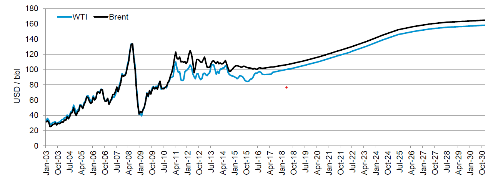
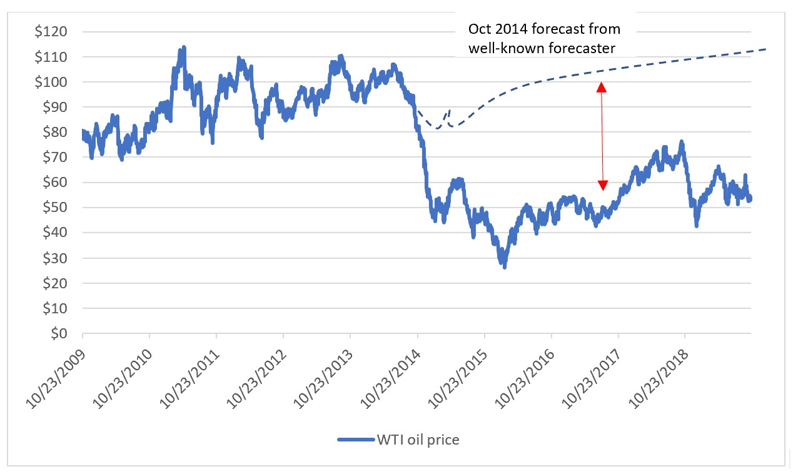
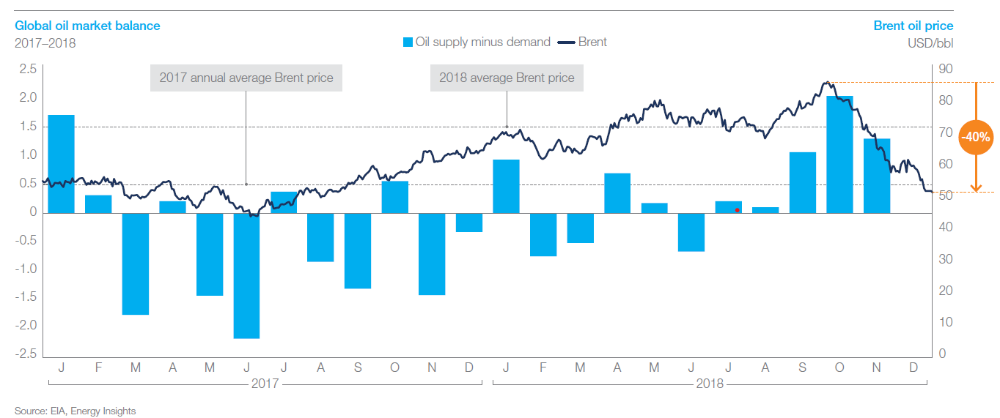
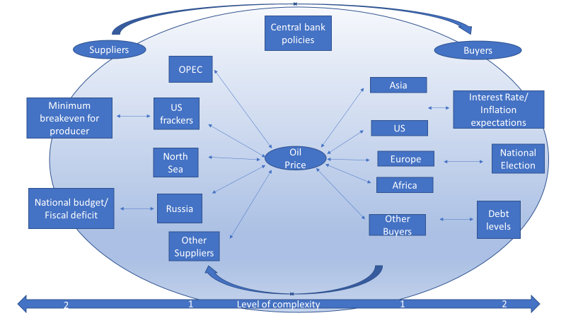
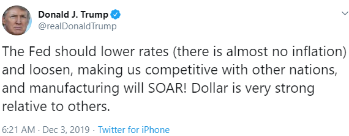

By Rob Liou, CPA, CMA
Published December, 2019
Accurate financial forecasting is one of the most difficult aspects of finance to get right. Finance is littered with forecast models that do not succeed. Though some current day models have moved on from simply assuming exponential growth based on prior year numbers, even when attempting to account for broader industry dynamics, these newer models still fail to account for industry downturns, or significant cyclical events stemming from external locations.
Oil prices are one of the most important leading indicators of the world economy, playing an important role in many industrial forecasts. As the price of most energy sources are linked to the price of oil, governments (especially net energy exporters), energy companies, commodity companies, and refineries all rely on oil prices for their sales and cost forecasts. However, the volatile and unpredictable nature of oil prices makes it difficult for entities to plan ahead. As the world gets larger and more complex, oil price financial models must adapt to the added size and complexity of the inputs they are attempting to model by becoming more complex themselves. Though the model size can be overwhelming, artificial intelligence programming and other tools (such as Python) can help, to a degree. A simple financial forecast looks at factors that ultimately influence the forecast figure in question. An advanced model looks at the factors that influence the factors- a step-up in complexity. Consider a model that predicts company bankruptcy – would simply looking at a company’s historical internal financial data be sufficient? No- one would need to look at the external factors as well that may impact the company’s internal figures- industry dynamics, government, central bank policy, etc. and understand how these factors ultimately interact with each other!
What does an advanced forecast model look at?
Despite the importance of oil prices, many of the best-known oil price forecasters consistently seem to get them wrong.
The forecast below was made in October 2014 by a well-known economic research company. Following the oil price crash that began in 2014, it stated that oil prices would rapidly rebound and increase steadily into the future, and easily top $100/ bbl again within 4 years time. Forecasts predicting a rapid rebound like this were very common and generally accepted during this timeframe.
Exhibit 1: Oil price forecast (2003-30) released in October 2014 by well-known research company

(Note: WTI stands for West Texas Intermediate, and is used to describe the type of oil typically for sale in West Texas. It represents the North American price of oil. Brent refers to the Brent Oil Field in the North Sea off of the coast of the UK, and represents the international price of oil. Note that Brent is usually about $2-$10 dollars more expensive than WTI, but the spread changes everyday: https://ycharts.com/indicators/brent_wti_spread. The current spread is about $5-$7/bbl.) For the purposes of this article, all oil prices are assumed to be WTI unless otherwise specified.
In the name of giving clients assurance about the future, there is generally an optimism bias that pervades many corporate forecasts. However, the forecast in Exhibit 1 dramatically underestimated the depth of the oil price crash that begin in 2014, whereby the price cratered to $28/bbl in early 2016. Unlike in the forecast, oil prices continue to lag below $60/bbl, well below the $100+ level forecast to be achieved by 2016.
Exhibit 2: Actual WTI Oil Prices (2009- present)

This well-known forecaster is not alone in making such overly- simplistic forecasts, many of which sound like the following:
*(May 2018) Bank of America: Oil prices might spike to $100/bbl in 2019
* In 2018, Deloitte predicted $68-$70/bbl range for 2019-2025 period
* Sanford Bernstein predicts $76/bbl in 2019
* Goldman: Brent to hit $75/bbl in Q1 2019
Meanwhile, as of December 2019, WTI oil prices remain well below $60.
A traditional model for oil and gas is typically based off of supply and demand fundamentals, whereby the modeler will assume that there is an interplay between supply and demand which affects the price of oil. Given the multitude of parties on both sides, this is already a fairly complex model. For example, when crude supply builds up, the price will expect to decrease due to over-supply. However, when there are larger-than-expected draws on the crude inventory (an indication of increasing demand), the price will rise.
On the supply side, the major suppliers will be examined for their current and expected levels of production. A modeler will also look at drilling rig count as an indicator of production activity, their production inventory, and what projects they may have coming online or going offline. They will do this for every major supplier, such as the US, Russia, Saudi Arabia, and OPEC .
Sometimes, a geopolitical bent is added, whereby forecasters will also look for events which may cause disruptions to supply, such as a war breaking out, an attack on a pipeline, countries looking to restrain supply, etc. There is an assumption that suppliers are in a battle for market share, with everyone looking to advance market share while obtaining the highest price possible.
For traditional forecasters, the demand side is typically simpler than the supply side. Demand for crude oil is generally considered quite stable, and fairly closely tied to GDP growth rates. Therefore, looking at whether the global economy is in a growth or contraction phase, based on GDP figures, is enough to make a short-term prediction on oil demand. Sometimes, a more macro view will be examined, such as accounting for energy transitions, for example the impact of electric vehicles, legislation pertaining to ‘climate change’, impact of growth of renewable energy sources, etc.
In general, the supply and demand sides, however, are kept separate. GDP is GDP, while suppliers have their own issues to worry about. Again, the main driver of price determination is the oil supply and demand balance. According to these traditional models, if oil supply is greater than oil demand, this is enough to nudge the oil price to fall. Conversely, if demand is greater than price, then the oil price is expected to rise.
See Exhibit 4 below for an example.
Exhibit 4: Sample of typical oil price supply and demand model

As we saw in the section above, however, models based primarily on supply and demand have consistently failed to be accurate in recent years. What are these models missing? Perhaps they are over-simplified and do not go deep enough into the intricacies of the involved parties, nor do they account for seeing how everything is tied together? The increased complexity and inter-connectedness of the world might indicate that a new type of model is needed. If so, what would that model look like?
In the advanced model, we have increased the complexity of the model. We take a much closer look at the financials of the buyers and suppliers, and find that the world is more intertwined than we previously thought. Suppliers have their break-even production costs which set a floor to the oil price. The seller’s health affects the buyer’s ability to buy- sellers produce jobs for buyers, and their national budgets affect the economic health of the buyers. Central banks are the glue which holds the energy ecosystem together, and their policies have a dramatic effect on the demand for oil. Note that this sort of model requires an increase in the level of complexity to account for the additional variables. We need more data. Luckily, much of this data is publicly available.
Exhibit 5: Example of advanced oil price framework
Copyright: R. Liou, 2019

In the advanced model, given the factors and constraints that we have data for, we attempt to find a likely range of oil prices. We start with the price floor, the lowest prices can go before major segments of producers start to capitulate and go bankrupt. Therefore, we start with developing a very strong understanding of the oil producers and their average break-even prices.
We start with acquiring full list of the major producers and their production amounts, as seen as Exhibit 6 below. As in the traditional model, we look at each major producer’s production in the short-to-medium term. Do they have new projects coming along? What is the minimum price needed to get these projects online? Are any supply disruptions expected? Are groups attempting to limit production in order to boost the price?
Exhibit 6: Global crude oil production, by Region (2019)
As a next step, we go into detail for each significant producer, attempting to develop a detailed understanding of each producer’s break-even price.
The chart in Exhibit 7 below is from Saudi Aramco’s 2019 IPO prospectus. It gives the average break-even cost for each country. We can use this as a starting point for our analysis. Note that break-even costs are in a range in green, but the yellow represents the average cost of the range. Therefore, even though some projects may cost more than the current price of oil, the losses sustained would theoretically be covered by the profits gained from producing the lower cost projects. Therefore, the producer would generally be OK with the price of oil at the break-even, though of course, they would prefer the price to be as high as possible to maximize their profitability.
Exhibit 7: Average post-tax breakeven costs at a 10% rate of return by country for new oil projects – Saudi Aramco IPO 2019 (Brent)
Combining Exhibits 6 and 7, let’s take a look at the break-even costs of some of the most important producers. First, note that only a handful of producers are above the $50 (Brent) mark, such as China’s onshore at about $62 Brent, or about $56 WTI, which helps to explain why they import more oil than any other country in the world- their costs have become high. To the left of China, we can see that the break-evens of many of the major producers are primarily under $50/bbl (Brent). However, the devil is in the details, and we may need to look a bit closer to get to the right break-evens. Let’s start by taking a closer look at the marginal suppliers, those whose production are most likely to rise or fall based on current oil prices.
Within North America, there is a distinction between conventional and unconventional oil. Unconventional oil represents oil that is trapped in very tight spaces and that must be hydraulically fractured ‘fracked’ in order to extract. This process is very expensive compared to conventional oil and is somewhat controversial for its environmental impact. That said, it represents almost all new supply to the world market since 2010 and is responsible for increasing US production from 5 million barrels per day (bpd) in 2010 to over 12 million bpd in 2019. See Exhibit 8 below. Therefore, NAM tight oil is a major marginal producer and their volumes are very important to the determination of the total supply that will go to market. If the oil price goes below their break-even cost, then a large part of the world’s supply will start to go off the market as the producers go bankrupt.
Exhibit 8: World conventional and unconventional liquid oil production breakdown
Per Exhibit 7, US on-shore break-even is just below $50 (Brent), but this fails to distinguish between conventional and tight oil. As stated previously, the tight oil faction has a higher break-even cost. There is a lot of information supporting this, but one key data point was that according to IHS Markit, in 2016, their average breakeven price was about $53 . Though costs may have come down since then, the best acreage has also been produced. Also, it is key to note that in Q3 2019, when oil prices averaged $53, the top 16 tight oil producers barely broke even, with many falling in the red. There also appears to be a lot of research supporting the $50 floor for the majority of tight oil:
It is therefore important to keep a close eye on their break-even costs, but for our analysis, we will assume they are currently in the $50 range.
Next, we examine the break-evens for the major oil producing countries. Note that while per Exhibit 7, the break-evens for most countries are below $50/ bbl (Brent), the break-even for the parent country is NOT the same thing. Due to oil taxes and profits being used by governments to fund state budgets (such as for entitlements, subsidies, infrastructure, etc), the break-even for a country budget is generally going to be much higher than its oil production cost. In general, to raise revenue for the state, as a net exporting country, they would like the price to be as high as possible. That said, national producers also have the ability to fund deficits for a longer period of time than a corporation can, such as by borrowing from other areas of the government, issuing bonds, cutting back on entitlement spending, taking loans from a central bank, etc.
OPEC, which includes major producing countries such as Iran, Iraq, Kuwait, Libya, Nigeria, Saudi Arabai, and UAE, has openly stated in the past year that they aim for an oil price range of$60-$70 (Brent): https://www.cnbc.com/2019/03/18/60-70-oil-is-the-pain-threshold-for-the-us-and-opec-jpmorgan-says.html https://oilprice.com/Energy/Energy-General/OPEC-Aims-For-60-70-Oil.html
Saudi Arabia, though a part of OPEC, will be examined separately due to their being the #2 producer behind the US. While their break-even chart shows a break-even price of $8-$18 (Brent), in truth, their situation is much more complicated. Consider the following: a. In 2016, due to oil price crash which brought prices from over $100/bbl to $28/bbl, they ran a fiscal deficit for the first time in 15 years. b. According to the IMF, in order to balance their budget, Saudi Arabia would need an oil price of $80-$85/bbl (Brent). i. In 2020, they are expected to run a budget deficit of at least $50 billion. ii. In order to raise funds to cover the deficit, they ran their first ever bond issue in 2018. c. To partially offset these financial pains, they planned in 2017 to IPO their national oil company, Saudi Aramco. However, the IPO has been delayed repeatedly partly because of an inability to achieve the high valuation they are seeking. Note that their 2019 IPO prospectus was constructed using an assumed price of $65 (Brent). d. In the longer-term, these factors all become relevant.
The third largest producer, at 10.8 million bpd, seems to have the lowest state break-even of all of the major producers:
Russia's Breakeven Oil Price Falls to Decade Low
According to the chart, new oil projects for European offshore oil production appear to break-even at the $40-$45/ bbl range (Brent). In the longer- term, however, in decline for a number of years, the industry seems to desire crude at $60-$70/bbl (Brent).
Energy Voice
In some cases, sustained prices above $50/bbl have caused major declines in production. For example, given their high break-even price, Venezuela’s heavy oil production has declined from 2.2 million b/d to just 900K b/d in just 3 years, presumably from political unrest as well as lower oil prices. China’s higher break-even price has led them to become the world’s largest crude importer, as they prefer to increase imports while allowing their production to decline year-over-year. Other countries with higher break-evens, such as India, are not large producers, so a decline in their production will not heavily affect the supply or price of oil.
Exhibit 9: Global crude oil production, by Region (2019) with break-evens
Putting all the break-even prices into a table, one can estimate a floor where the oil price cannot drop below for an extended period of time without substantially impacting the health of the major producers. While these break-evens don’t necessarily equate to government break-even prices, in the short-term, we will assume that governments can find a way to fund shortfalls in national deficits. Longer- term, this would not be the case.
Bottom line: We estimate the short-term current floor price at around the $50-$53 range. Below that, and major suppliers will start to cut supply, which would raise the price of oil. Longer term, as more expensive sources of oil are produced (such as tight oil, offshore, and heavy oil) and producing countries face severe budget crunches, we can expect the floor price to increase.
The ceiling for oil prices is the part that is most poorly understood by most forecasters, and results in why we commonly see forecasts which say that as long as GDP rises, oil prices can go higher for indefinite periods of time. Earlier, we stated that forecasters traditionally look at oil demand as being closely tied with GDP, and since US GDP growth is generally assumed over the long- term to be positive within the 1%-4% range, that oil demand growth occurs along this path as well.
Exhibit 10: U.S. GDP growth from 1970 to present
Exhibit 11: Global oil consumption from 1970 to 2018 (in million metric tons)
From Exhibit 11, we can see that global crude demand has never really slowed. The main causes for deceleration tend to come from a recession or shifting to an alternative such as green energy or demand for Electric Vehicles. (Note that EVs are unlikely to make a dent for a while- see https://sfmagazine.com/post-entry/october-2019-the-china-electric-vehicle-industry/). GDP growth has been mostly positive in America’s history and this roughly mirrors oil demand as well. So why hasn’t the oil price been able to keep pace?
Let us take a closer examination of some of the factors besides GDP that are most pertinent to answering this question. They are: inflation, interest, debt, stock market levels, central bank policy, and the election cycle. Note that since we are focused on WTI oil prices, this analysis will focus primarily on the financial situation of the US.
This is the most basic economic factor that is directly impacted by oil prices. In the short-term, the chief measurement of inflation in the US, the Consumer Price Index (CPI) is highly impacted by the price of oil. Why is this? Even though according to the US Dept of Labor, energy comprises only 7.5% of CPI, in truth, energy costs underscore nearly every element of CPI, from transportation of food, to packaging (i.e. styrafoam, an output of petroleum), to transportation of employees, to shipping and delivery of items. Therefore, the rise in oil/gas prices are highly correlated with a rise in CPI:
Exhibit 12: Correlation between gas prices (RB) and CPI
The key question is at what point does CPI become too high? The Federal Reserve has consistently targeted a CPI ceiling of 2% , and this has become unofficial policy for the last several years.
When CPI starts to reach the 3% range, however, this starts to become a problem as inflation starts to become noticed by the general population, who then start to react in negative ways (strikes, protests, elections). To combat the rising inflation, central bankers will typically then start to raise interest rates, but this creates problems of its own.
Exhibit 13: US National debt and interest expense
Another constraint noted here is that the US national debt is high and increasing; and that interest expense has topped 500 billion in 2019. The rise in interest rates makes it that much harder to balance the budget, key of which can spark trade wars. Therefore, high debt levels mean lower interest rates help to keep interest expense low.
Exhibit 14: China Total non-financial sector debt to GDP
Note that China’s debt levels are high as well, however, as this project is focused on the price of WTI oil, this will not be analyzed in this article.
Ever since the phrase “it’s the economy, stupid” was uttered by a political analyst in 1992, it’s become a well-known strategy by presidential candidates to focus on improving the perception of the economy and stock market in order to secure a successful election. In recent years, this has been taken to a whole new level. As stated above, factors such as inflation and unemployment rates play a huge factor in how the voting public views the health of the economy.
Exhibit 15: Trump tweet on stock market
But another very important factor is the level of the stock market, in particular, the S&P500. It is thus no surprise that President Trump constantly, on Twitter, echoes the record- breaking highs of the stock market as good news whenever possible. After all, this greatly improves his standing within the public’s eye and increases his chances of being re-elected. However, as stated above, high interest rates tend to kill stock market rallies. Therefore, oil prices need to be capped to prevent these issues occurring and causing a stock market decline.
Central Bank support is a strong factor in increasing GDP. Is Quantitative Easing or a similar policy taking place to accommodate the economy? This facilitates demand and GDP growth. If a government is deleveraging, it means that interest rates are rising while debt creation is decreasing, which lowers GDP. This comes into play due to national election factors.
In a sense, social media has already gifted us with a ceiling for the United States, in the form of President Trump tweeting when he feels that oil prices are too high:
Exhibit 17: WTI and Trump tweets
Trump Tweets (TT) about oil price
1- Jun 29, 2017: $44.93 “In other words, Russia was against Trump in the 2016 Election - and why not, I want strong military & low oil prices. Witch Hunt!”
2- Apr 20, 2018: $68- “Looks like OPEC is at it again. With record amounts of Oil all over the place, including the fully loaded ships at sea, Oil prices are artificially Very High!”
3- June 13 2018: $66.64 “Oil prices too high, OPEC at it again. Not again!”
4- Sep 20, 2018: $70.42 “We protect the countries of the Middle East, they would not be safe for very long without us, and yet they continue to push for higher and higher oil prices! We will remember. The OPEC monopoly must get prices down now!”
5- Nov 21, 2018: $54.63- “Oil prices getting lower. Great! Like a big Tax Cut for America and the World. Enjoy! $54, was just $82. Thank you to Saudi Arabia, but let’s go lower!”
6- Nov 25, 2018: $51.63- “So great that oil prices are falling (thank you President T). Add that, which is like a big Tax Cut, to our other good Economic news. Inflation down (are you listening Fed)!”
7- $52.9- Dec 5 2018: “Hopefully OPEC will be keeping oil flows as is, not restricted. The World does not want to see, or need, higher oil prices!”
8- Feb 25 2019: $55.48- “Oil prices getting too high. OPEC, please relax and take it easy. World cannot take a price hike - fragile!”
9- $59.30 Mar 28, 2019: “Very important that OPEC increase the flow of Oil. World Markets are fragile, price of Oil getting too high. Thank you!”
10- Apr 27, 2019: $63- “Spoke to Saudi Arabia and others about increasing oil flow. All are in agreement. The California tax on gasoline is causing big problems on pricing for that state. Speak to your Governor about reducing. Economic numbers, 3.2% GDP for what is often worst quarter, looking good!”
Trump’s tweet history paints a picture of attempting to manage a range of oil prices in order to balance certain economic factors. All, in order to retain a high approval rating as he attempts to retain his presidency in the 2020 election. So from these, we have the gift of the President telling us what he believes his ceiling is, at about $53. So, where did he get this figure from and why is it important?
The following chart assembles some of the key factors we described above (WTI, CPI, Fed Funds) in order to clue us into how it all fits together.
Exhibit 18: WTI, CPI, and Fed Funds
 Copyright: R. Liou, 2019
Copyright: R. Liou, 2019
1) From the period 2010-2014, the global economy was in the midst of a recovery from the great financial crisis. Interest rates were kept at near zero, and central bank policies were accommodative- Quantitative Easing was in place to boost the global economy. This allowed prices to remain high for oil producers while allowing the general public to afford high gas prices, even as inflation remained at or below the Fed’s target of 2%.
2) In October 2014, central bank policy no longer remained as accommodative- QE3 ended, which resulted in a slowdown in global growth. Meanwhile, an oil supply price war began to take place- while North American fracking continued to take off, Saudi Arabia/ Russia refused to cut production volumes. Meanwhile, Japanese inflation hit 4%. All of these factors conspired to bring oversupply to the market, while demand declined significantly, thus bringing prices crashing considerably.
3) The extremity of the price decline appeared to catch many parties by surprise. Note that the price dropping to $27/bbl in February 2016 went well below the break-even of many key producers. As a result of this, many projects were cancelled, and many producers such as OPEC, Russia, and Saudi Arabia, seeing their national budgets sink deep into the red, enjoined to trim output. Meanwhile, low oil prices led to CPI dropping to the 0%- 1% range, well below the Fed’s target of 2%. With interest rates so low, the FED began to raise interest rates to more normal (i.e. non-zero) ranges.
4) Despite the cut in output, the Saudi budget continued to have serious troubles, which led to their idea to issue bonds for the first time and to IPO Aramco in order to fundraise. Until late 2016, CPI was below 2% and the global economy continued growing at 3.9%. Meanwhile, Chinese oil demand continued to grow steadily.
5) As CPI started to approach 3%, we saw President Trump begin to unleash his tweet barrage again (see TT #2-4), exclaiming oil prices were too high. This came in the context of the trade war with China. As federal rates rose, the S&P entered a corrective phase starting in October 2018. In the midst of his term, Trump clearly didn’t want to increase interest rates, which would harm the stock market and slow the economy.
Exhibit 19: S&P500, WTI, Fed Funds, and CPI
6) Notice the red circled area. In October 2018, the S&P 500 began to decline due to the impact of the China trade war and Fed Fund rate normalization. In the midst of the 2-month, 18% decline, Trump starts to openly criticize the Fed (“…who is our bigger enemy, the Fed, or China?”). Meanwhile, WTI declines from over $78/bbl to $45/bbl in the same time frame, bringing CPI down as well. With WTI below the break-even of many producers, however, many major producers such as Russia and Saudi Arabia began to cut volumes.
7) As prices rebounded, Trump gave strong hints what he believed the ideal price range was. (See TT #5-9). TT #7 almost seems to declare his exact preferred price:
“$52.90- Dec 5 2018: Hopefully OPEC will be keeping oil flows as is, not restricted. The World does not want to see, or need, higher oil prices!”
8) Besides complaints about oil prices being too high, he also asks the Fed to bring interest rates back down, as he doesn’t want normalization to harm the stock market rally. On the other hand, Saudi Aramco trying to get prices higher in preparation for IPO. (See TT #10)
Based on this information, it appears that Trump has given us his price ceiling- somewhere around the $53-$55/bbl range.
What does the model predict going forward?
Based on CPI, interest rates, the stock market, and the other factors discussed above, the oil price ceiling appears to be in a narrow band in the $53-$55/bbl range. With CPI currently already near 2% and Trump calling for lower interest rates, it means that CPI cannot rise very much unless certain factors change.
Therefore, sustained oil prices above $60 appear to be out of picture, at least until after the national election. In the longer term, our model should continue to monitor key factors which would affect the ceiling, factors such as whether national debt levels reduce, GDP recovers organically (difficult in context of trade war, high debt levels), or the FED reduces the inflation target (somewhat possible).
With North American tight oil breaking even around $50/bbl, this appears to set a floor for our oil price in North America. Internationally, we must remember that national producers such as OPEC, as well as producers in the North Sea, want prices in the minimum of the $60-$70 range (Brent), or about $55-$65 WTI.
Therefore, our current range of oil price is in the $53- $57/bbl range. As a forecaster, other factors equal, if the price goes above that, it means the WTI oil price should be shorted, while a price below that range means oil should be bought.
Our model helps us to forecast a clear, specific range of oil prices that most other forecast models cannot. We should pay attention to the key factors involved in order to keep the model up-to-date. These factors could be included in a calendar of upcoming, pertinent events such as:
* Saudi IPO
* National election
* CPI weekly report issuance
* Fed policy and inflation targeting updates
To recap, the steps to creating an advanced model are:
1) Take a basic model, and look for flaws
2) Take the model to a higher level of complexity- Do not just look ‘inward’, or even domestically- look at how all factors globally are related and affect each other
3) Create a model to account for these factors, noting that the model doesn’t need to be overly complex as long as it accurately models the floor and ceiling ranges
4) This model will help you to eliminate extremities in your forecast while setting a more accurate range of predictive values